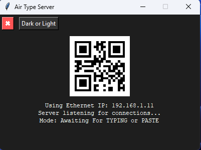

Download Server

Air Type lets you instantly type text from your smartphone directly into your PC over local Wi-Fi. Fast, seamless, and secure.
Available now on the Microsoft Store. Just search for 'Air Type server'
📱 What is Air Type?
Air Type is a professional utility designed for automated typing between your smartphone and your computer. By using the companion Air Type mobile app, you can instantly transmit text from your phone, and the server will automatically type it into any active application on your PC in real-time.
Whether you are working in Notepad, MS Word, web browsers, chat apps, or form fields, Air Type helps you type faster and more comfortably by turning your phone into a wireless input device.
🚀 Key Features
- Instant Remote Typing – Text typed on your phone appears instantly on your PC screen.
- Zero Lag Experience – Enjoy a smooth, real-time connection with no delay.
- Universal Compatibility – Works with any active desktop application or text field (Notepad, Word, etc.).
- One-Tap Connection – Quickly pair devices using a QR Code or IPv4 address.
- Wireless & Secure – Uses local Wi-Fi network, no internet data required.
- Smart Security – Actual text transfer stays within your local network and does not consume your internet data.
⚙️ How It Works
- Install and launch Air Type Server on your computer.
- Open the Air Type mobile app on your smartphone.
- Sign in using Google and connect using QR code or IPv4 address.
- Start typing — your text appears instantly on your PC!
🛠️ Detailed Setup Guide
Step 1: Install Air Type Server on PC
- Search Microsoft Store: Open Microsoft Store on your Windows PC and search for "Air Type".
- Install: Click 'Get' or 'Install' to download the server directly.
- Launch: Open the application once the installation is complete.
Step 2: Connect the Mobile App
- Open the Air Type app on your smartphone.
- Sign in using your Google account.
- To Connect: Scan the QR code displayed on the Server interface OR manually enter the IPv4 address shown on the dashboard.
- Tap the Connect button.
- Start Typing: Any text you send from the app will now be typed instantly into the active application on your PC.
🎯 Ideal For
- Long Typing Tasks: Use mobile voice-to-text or comfortable phone keyboards for long documents.
- Quick Transfers: Copy a link or text on your phone and "type" it directly into your PC browser.
- Remote Productivity: Work faster without switching back and forth between devices.
- Efficiency: Perfect for users who find mobile typing faster than physical keyboards.
🔍 Troubleshooting Tips
- Same Network: Ensure both your smartphone and PC are connected to the same Wi-Fi network.
- Firewall Permissions: If it won't connect, check that Windows Firewall is not blocking "Air Type Server."
- IP Match: Double-check that the IPv4 address entered in the app matches the one shown on your Desktop Server dashboard exactly.
Pro Tip: You can download the Air Type Server directly within the mobile app and share the link to your desktop to get started even faster!
Note: Windows Only • Not compatible with mobile operating systems.